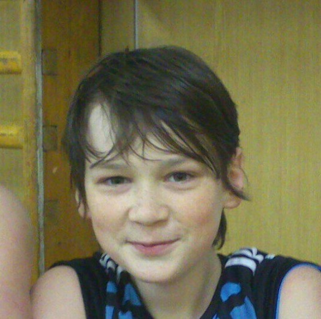

Denis Hrinko
Dobrý deň. Volám sa Denis, mám 21 rokov a som zo Svidnika na vychodnej strane republiky. Medzi moje záľuby patrí hra na hudbných nástrojoch, pexeso a kúpanie sa v našom mori Domaša.

Dobrý deň. Volám sa Denis, mám 21 rokov a som zo Svidnika na vychodnej strane republiky. Medzi moje záľuby patrí hra na hudbných nástrojoch, pexeso a kúpanie sa v našom mori Domaša.
Volám sa Kristián Špak. Mám 22 rokov. Pochádzam z mesta Svidník. Študujem na Slovenskej technickej univerzite v Bratislave, Fakulta elektrotechniky a informatiky. Medzi moje záľuby patrí programovanie ,šport, filmy a seriály.

Po skončení vojny striedal zamestnania, živil sa hlavne ako dôverník Reichswehru (armáda a námorníctvo) v Mníchove, v Bavorsku, ktoré bolo ako slobodný štát súčasťou Weimarskej republiky. Bola to funkcia spojky medzi armádou a vládou vedenou židovským predsedom vlády Eisnerom, ktorého pohrebu sa Hitler 26. februára 1919 osobne zúčastnil. Za Eisnera bolo Bavorsko deklarované ako ľudový štát (Volksstaat Bayern). Eisner, sociálny demokrat, bol zavraždený vo februári 1919, čo viedlo ku komunistickej revolúcii a vzniku Bavorskej republiky rád, ktorá bola vyhlásená 6. apríla 1919. Po vojenskej porážke Bavorskej republiky rád v máji 1919 obviňoval Hitler pred súdom svojich kamarátov z pluku za to, že spolupracovali práve s republikou rád. Potom sa dokázateľne niekoľkokrát stretol s veliteľom oddelenia vyšetrovania (Aufklärungsabteilung) Reichswehru Karlom Mayrom, čo viedlo k domnienkam, že sa stal dôverníkom tajnej služby. Isté je, že v júni a v júli 1919 absolvoval „antiboľševistické školenia“ na mníchovskej univerzite a v septembri 1919 prenikol do Nemeckej robotníckej strany (Deutsche Arbeiterpartei – DAP), ktorú sledovali Mayrovi dôverníci ako možný zdroj boľševizmu a spartakizmu. Táto socialisticko, nacionalisticko a xenofóbno-antisemitsky orientovaná strana mala málo členov a tak v októbri 1919 Hitler namiesto donášania sa stal jej 55. straníkom (s Mayrovým súhlasom). Do strany ho prijal predseda Anton Drexler, pretože na zhromaždeniach, konaných väčšinou v krčmách, sa Hitler prejavil ako dobrý rečník, už vtedy so svojou typickou gestikuláciou.

Ahojte, volám sa Matúš Gossányi, momentálne mám 22rokov a študujem 3. bakalársky ročník na fakulte elektrotechniky a informatiky na STU, v Bratislave. Pochadzam z maleho mesta na Orave, z Trstenej. Medzi moje zaluby patri Futbal, programovanie, hudba, politika.
